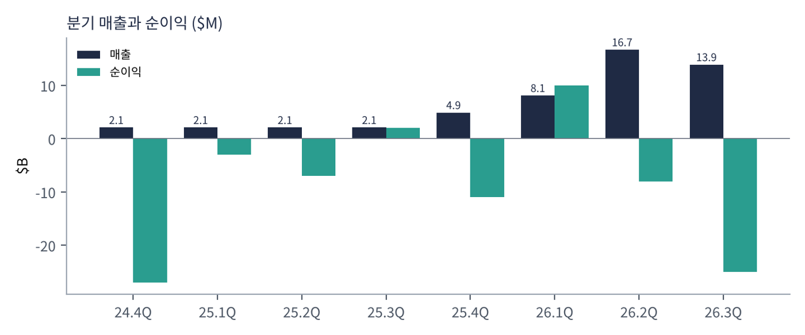
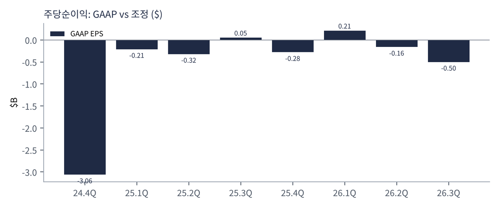
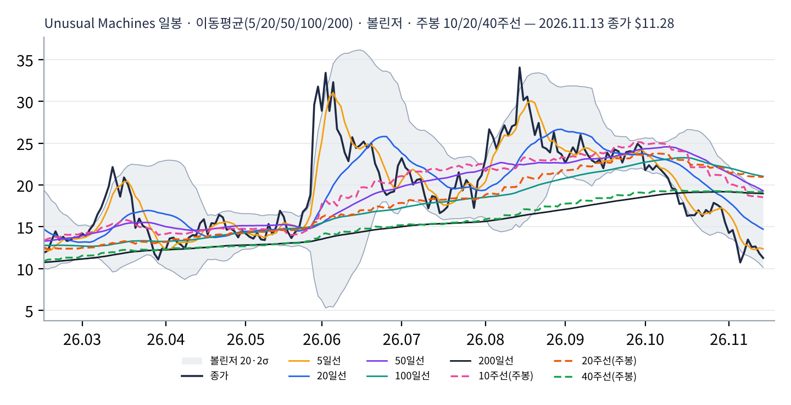
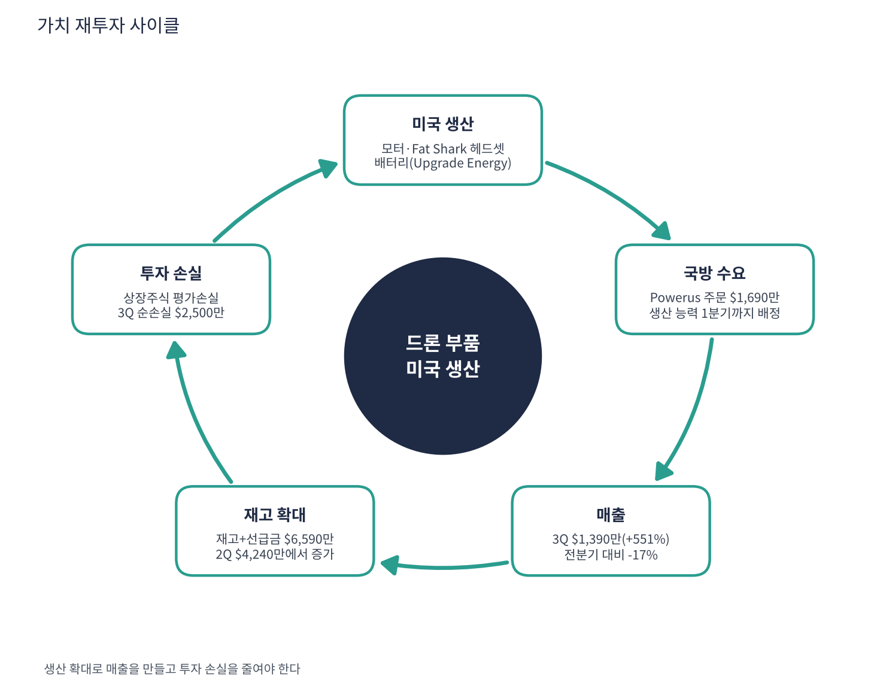

언유주얼 머신스는 미국 국방 기준(NDAA)을 지키는 드론 부품과 완제품을 만드는 회사다. FPV 고글 Fat Shark와 모터·배터리를 미국에서 직접 생산하고, 매출의 약 90%가 기업·방산 고객이다. 3분기 매출은 $1,390만으로 작년의 6.5배지만 전분기보다 줄었고, 상장주식 투자 평가손실로 $2,500만 순손실을 낸 회사다. 현금은 시가총액의 약 절반이다.
| 항목 | 내용 |
|---|---|
| 종목 | Unusual Machines, Inc. (UMAC) · NYSE American · 드론 부품 · 본사 미국 플로리다주 올랜도 |
| 밸류에이션 | PER 해당 없음(적자) · P/S 13.6배(스캐너) (11/13 종가 $11.28) |
| 최근 분기(3Q26) | 매출 $1,390만(전년 대비 +551%, 전분기 대비 -17%), 순손실 약 $2,500만, EPS -$0.50(컨센서스 -$0.11) |
| 누적(1~3Q) | 매출 $3,870만(+515%), 기업 고객 비중 88% |
| 현금·차입 | 현금 약 $1.62억 + 단기투자 $0.98억, 운전자본 $3.42억, 차입금 없음(스캐너) |
| 목표(공식 가이던스 아님) | 4Q26 매출 $2,500만(3분기 실적 발표에서 재확인 보도), 2027 1분기 말 영업현금흐름 흑자 목표 |
| 재고 | 재고+선급금 $6,590만(2분기 말 $4,240만), 완제품 재고 $930만 |
| 다음 실적 | 4Q26 실적: 2027년 4월 1일 예정(트레이딩뷰) |
| 직책 | 인물 | 역할·특징 |
|---|---|---|
| CEO | 앨런 에반스 | 생산 능력을 2027 1분기까지 거의 배정했다고 밝힘, XTIA Aerospace 회장도 겸임(보도) |
경영 스타일: '미국 내 생산 능력을 먼저 키우고 재고를 쌓아 매출을 만든다'. 회사는 공식 가이던스를 내지 않고 내부 목표만 말한다(3Q $1,200~1,400만, 4Q $2,500만). 3Q는 생산 설비·공급사 변경·재고 확대에 집중한 분기라고 설명했다. 직원은 6월 240명에서 340명 이상으로 늘었다.
모터·FPV 고글·배터리를 미국 내 공장에서 만들어 중국산 부품을 쓰지 못하는 군·정부 고객에 판다.
배터리 업체(Upgrade Energy)를 인수해 내재화하고 생산 규모를 키우는 전략이다.
| 분기 | 매출 | 순이익 | EPS | 조정 EPS | 특이 사항 |
|---|---|---|---|---|---|
| 2024.4Q | $0.02억 | -$0.27억 | -3.06 | – | |
| 2025.1Q | $0.02억 | -$0.03억 | -0.21 | – | |
| 2025.2Q | $0.02억 | -$0.07억 | -0.32 | – | |
| 2025.3Q | $0.02억 | +$0.02억 | 0.05 | – | 투자 평가이익으로 흑자 |
| 2025.4Q | $0.05억 | -$0.11억 | -0.28 | – | 미국 생산 개시, 인력 확대 |
| 2026.1Q | $0.08억 | +$0.10억 | 0.21 | – | 흑자(원인 미확인) |
| 2026.2Q | $0.17억 | -$0.08억 | -0.16 | – | 매출 사상 최대 |
| 2026.3Q | $0.14억 | -$0.25억 | -0.50 | – | 상장주식 평가손실 포함, 매출 -17% |


언유주얼 머신스는 조정 EPS를 발표하지 않고 조정 EBITDA만 발표해 조정 EPS 열은 '–'이다. 매출·순이익은 트레이딩뷰 스캐너 값(백만 달러 반올림)이고, 4Q25~3Q26 매출은 회사 발표 값이다(4.9·8.1·16.7·13.9백만 달러). 4Q24 EPS는 스캐너 -3.06, 트레이딩뷰 Reported -3.26으로 달라 원인은 확인하지 못했다. 4Q24 순손실($0.27억)이 큰 원인도 확인하지 못했다.
흐름 요약: 매출은 3Q25 $0.02억에서 3Q26 $0.14억으로 늘었지만 2Q26 $0.17억에서는 줄었다. 순이익은 투자 평가손익에 크게 흔들려 3Q25·1Q26은 흑자, 3Q26은 -$0.25억이다. 영업이익과 분기 설비투자의 8분기 값은 구하지 못해 표에서 뺐다.
| 구분 | 내용 | 비고 |
|---|---|---|
| 기업·방산 고객 | 3Q 매출의 약 90%, 누적 88% | 소매 비중은 2Q 약 6% |
| Powerus 주문 | 카운터 드론 파트너로부터 $1,690만 신규 주문(보도) | 생산 능력이 2027 1분기까지 거의 배정됨 |
| Upgrade Energy(배터리) | 3Q 매출 $332만(상반기 합계 $337만) | 3Q 말 인수 완료, 직원 24→49명 |
| 특수관계 매출 | 3Q 약 $200만(14%), 미수금 $190만(보도) | Red Cat 계열 Teal Drones 등 특수관계 거래 존재 |
| 4Q26 목표 | $2,500만 | 공식 가이던스 아님 |
고객 집중이 커질 수 있다. 회사는 시장이 소수 승자로 정리되며 고객 집중이 2027년까지 높아질 것이라고 밝혔다.
언유주얼 머신스의 방향은 '미국 내 드론 부품 생산 능력을 키우고, 배터리까지 수직 계열화하며, 방산 주문을 매출로 바꾸는 것'이다.
| 축 | 최근 움직임 |
|---|---|
| 생산 | 모터(2025.11)·Fat Shark(2026.1) 미국 생산, 2·3교대 확대 |
| 수직 계열화 | Upgrade Energy 인수(배터리) |
| 주문 | Powerus $1,690만 등, 생산 능력 2027 1분기까지 거의 배정 |
| 이익 | 2027 1분기 말 영업현금흐름 흑자 목표 |

| 이동평균 | 값 | 종가 대비 | 해석 |
|---|---|---|---|
| 5일선 | $12.37 | -8.8% | 현재가가 아래 |
| 20일선 | $14.72 | -23.4% | 현재가가 아래 |
| 50일선 | $19.31 | -41.6% | 하향 |
| 100일선 | $21.04 | -46.4% | 하향 |
| 200일선 | $18.98 | -40.6% | 현재가가 크게 아래 |
주봉 흐름: 2025년 11월 저점 $7.2(11/21) → 2026년 1월 $19 → 3월 $23.4 → 5월 말 급등 $32.4 → 8월 고점 $34.9(8/14) → 9월 $23~25 → 10월 하락 → 11/2 주 저가 $10.2 → 11/9 주 종가 $11.3.
| 규칙 | 기준 | 현재 값 | 신호 |
|---|---|---|---|
| 장기 추세 필터 | 종가 vs 200일선 | $11.28 < $18.98 | 매도 |
| 중장기 교차 | 50일선 vs 200일선 | $19.31 > $18.98 | 매수 |
| 단기 교차 | 20일선 vs 50일선 | $14.72 < $19.31 | 매도 |
| 돈키언 채널 | 55일 고가 $26.20 / 저가 $10.17 | 중간값 $18.18 아래 | 매도 |
| 1개월 모멘텀 | 21거래일 수익률 | -36.7% (기준 $17.83) | 매도 |
| 3개월 모멘텀 | 63거래일 수익률 | -62.6% (기준 $30.15) | 매도 |
| 6개월 모멘텀 | 126거래일 수익률 | -30.4% (기준 $16.20) | 매도 |
| 12개월 모멘텀 | 252거래일 수익률 | +5.1% (기준 $10.73) | 매수 |
| 종합 (8개 평균) | -0.50 | 매도 우위 |
해석: 8개 중 2개 매수(50일선>200일선, 12개월 모멘텀), 6개 매도로 -0.50(매도 우위). 두 매수 신호 모두 곧 사라질 수 있다. 12개월 모멘텀 기준 $10.73과는 $0.55 차이이고, 50일선($19.31)은 200일선($18.98)에 거의 붙었다. 14일 ATR $1.57 (13.9%)(가격의 약 14%)로 변동성이 매우 크다.
| 가격 | 무엇이 바뀌나 | 의미 |
|---|---|---|
| $10.73 이탈 | 12개월 모멘텀 | 매수 → 매도(점수 -0.75) |
| $16.20 상향 돌파 | 6개월 모멘텀 | 매도 → 매수 |
| $17.83 상향 돌파 | 1개월 모멘텀 | 추가 1개 전환 |
| $18.18 상향 돌파 | 돈키언 중간값 | 55일 채널 전환 |
| $18.98 상향 돌파 | 200일선 | 장기 추세 필터 전환 |
| 구분 | 가격대 | 근거 |
|---|---|---|
| 저항 1 | $12.4 ~ 14.7 | 5일선·20일선 |
| 저항 2 | $16.2 ~ 17.8 | 6개월·1개월 모멘텀 기준 |
| 저항 3 | $19.0 ~ 19.3 | 200일선·50일선 |
| 지지 | $10.17 | 55일 저점(11/2 주) |
| 강한 지지 | $7.25 | 52주 저점(2025.11.21) |
추세 추종으로는 매수 구간이 아니다. 현금이 시총의 절반이라는 점을 보고 접근한다면 $10.2~11.5에서 계획 비중의 30%만 진입하고 종가 $9.4(55일 저점 $10.17 아래) 이탈 시 손절한다. 1차 목표 $14.7(20일선), 2차 $17.8(1개월 모멘텀 기준, 내 가정). 일일 변동이 큰 종목이라 비중을 작게 가져간다.
| 악재 요인 | 내용 | 강도 |
|---|---|---|
| 투자 손익 변동 | 3Q 순손실이 상장주식 평가손실 중심, EPS -$0.50(컨센서스 -$0.11) | 높음 |
| 재고·미수금 증가 | 재고+선급금 $6,590만, 미수금 급증(보도) | 높음 |
| 고객 집중·특수관계 | 소수 고객 의존 확대, 특수관계 매출 약 14%(보도) | 중간 |
| 매출 둔화 | 3Q 매출 전분기 대비 -17%, 4Q 목표 $2,500만은 공식 가이던스 아님 | 중간 |
| 제3자 위험 | 국방 예산·드론 정책·계약 일정 등 정량 갱신 없음 | 참고 |
| 티커 | 회사 | PER(TTM) | PEG | P/S | EPS 성장(YoY) |
|---|---|---|---|---|---|
| UMAC | 언유주얼 머신스 | 적자 | – | 13.55배 | +79% |
| ONDS | 온다스 | 235.6배 | – | 9.92배 | +0% |
| RCAT | 레드캣 | 적자 | – | 7.53배 | -111% |
| KTOS | 크라토스 | 276.8배 | – | 3.98배 | -0% |
모두 트레이딩뷰 GAAP TTM 기준이다. 적자는 PER '–' 처리, ONDS·KTOS의 PER은 일회성 영향이 커 의미가 작다. 사업 구조가 달라 참고용이다.
UMAC는 현금과 단기투자 $2.6억에 차입금이 없어 버티는 힘은 크지만, 재고와 투자에 현금이 묶이고 있다. 3Q에 단기투자·대여에 $0.35억을 썼다는 보도가 있다.
| 지표 | 값 | 계산·출처 | 해석 |
|---|---|---|---|
| 현금 | 약 $1.62억 | 회사 발표 | |
| 단기투자 | $0.98억 | 회사 발표 | 상장주식 등 구성은 확인하지 못함 |
| 차입금 | 0 | 스캐너 | 순현금 약 $2.6억(내 계산) |
| 순현금 / 시총 | 약 46% | 내 계산 | 주당 약 $5.2(가중평균 약 5,000만 주 기준) |
| TTM 잉여현금흐름 | 약 -$1억 | 스캐너(반올림 값) | 오차 큼 |
| 가정 | 연 현금 사용 | 남은 기간 | 비고 |
|---|---|---|---|
| TTM 잉여현금흐름 지속 | 약 $1억 | 약 2.6년 | $2.6억 ÷ $1억, 반올림 값이라 오차 큼 |
| 연 현금 사용이 $2억으로 늘 때(내 가정) | $2억 | 약 1.3년 | 재고·설비 확대 시나리오 |
| 기준 | 값 | 비고 |
|---|---|---|
| P/S (스캐너) | 13.6배 | 트레이딩뷰 값 |
| P/S (TTM 매출 $4,360만) | 약 12.9배 | 시총 약 $5.6억 ÷ $4,360만(내 계산) |
| EV / TTM 매출 | 약 6.9배 | EV ≈ $5.6억 − $2.6억 = $3.0억 (내 계산) |
| EV / 4Q 목표 연환산 | 약 3.0배 | $3.0억 ÷ ($2,500만 ×4), 목표는 공식 가이던스 아님(내 계산) |
| 동종 | ONDS 9.9, RCAT 7.5, KTOS 4.0 | 11/13 스캐너 |
해석: 현금이 시총의 절반 가까이라 하락 방어력은 있다. 다만 4Q 목표 매출 $2,500만이 맞아도 연 매출 $1억 수준이라 가치의 큰 부분은 아직 미래 수요에 달렸다. 스트레스 가정(4Q 목표 연환산 $1억에 EV/매출 2~6배, 순현금 $2.6억, 주식 5,000만 주 고정, 내 가정): 2배면 주가 약 $9.2(-18%), 4배면 $13.2(+17%), 6배면 $17.2(+52%)이다.
| 지표 | 값 | 판정 |
|---|---|---|
| PER | 해당 없음 | TTM EPS -$0.73 |
| EV / EBITDA | 해당 없음 | TTM EBITDA 약 0(스캐너 반올림) |
| 3Q 순손실 | -$0.25억 | 대부분 투자 평가손실(보도), 영업 손실 규모는 미확인 |
| 방식 | PER | EPS 성장률 | PEG | 판정 |
|---|---|---|---|---|
| 트레이딩뷰 (GAAP TTM) | 해당 없음 | +79.4% | – | 적자라 PER 없음, 성장률은 손실 감소율 성격 |
| 조정 EPS 기준 | – | – | 산출 불가 | 조정 EPS를 발표하지 않음, 순이익이 투자 평가손익에 좌우됨 |
판정: PEG는 산출 불가다(적자). 판단 기준은 4Q 매출 $2,500만 달성, 2027 1분기 영업현금흐름 흑자, 투자 손익 변동이다.

사이클은 생산 확대 → 재고·주문 → 매출 → 현금 → 재투자다. 매출 고리는 성장 중이나 재고·투자에 현금이 묶인다.
| 고리 | 현재 숫자 | 고리 강도 | 약해지는 신호 |
|---|---|---|---|
| ① 생산 | 직원 340명+, 2·3교대 | 강함 | 수율·공급사 문제 |
| ② 주문 | Powerus $1,690만, 능력 거의 배정 | 강함 | 주문 취소 |
| ③ 매출 | 3Q $1,390만(-17%), 4Q 목표 $2,500만 | 보통 | 4Q 목표 미달 |
| ④ 재고·현금 | 재고+선급금 $6,590만, 현금 $2.6억 | 보통 | 재고가 매출보다 빨리 증가 |
| ⑤ 투자 손익 | 3Q 평가손실로 순손실 $2,500만 | 약함 | 주식 투자 손실 확대 |
구조: 강한 고리는 ①②, 약한 고리는 ⑤이다.